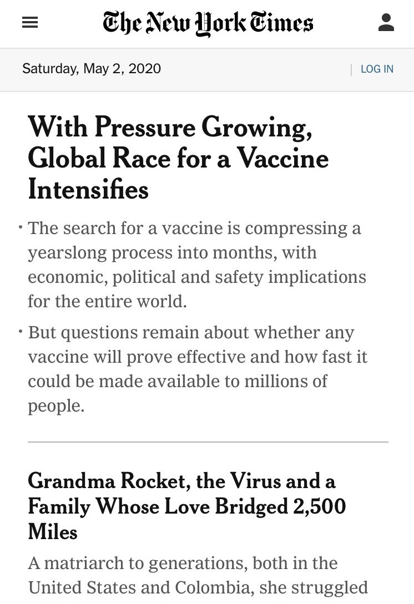

White Space
Samsung INC.
This website displays a use and design of white space. The writing on the page is clear and is easy to naviage and understand what the comapny is tryign to sell and get consumers interest.
Proximity
New York Times
This website displays a use and design of Proximity. The writing on the page is spead out through out page but still is very organized within the grid lay-out and is very easy to naviage. The Website organises every inch of space given.
Rule of Thirds
versace
This website displays a use and design of Rule of Thirds method. The writing on the page, the pages starts off whith just a portrait of a someone that complete covers the page, thus using the rule of thirds. The website also uses a very good amount of contrast.